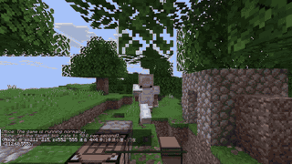
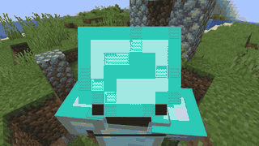
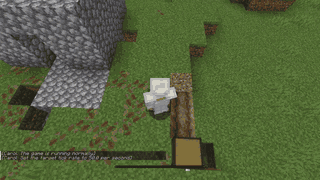
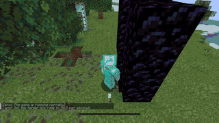
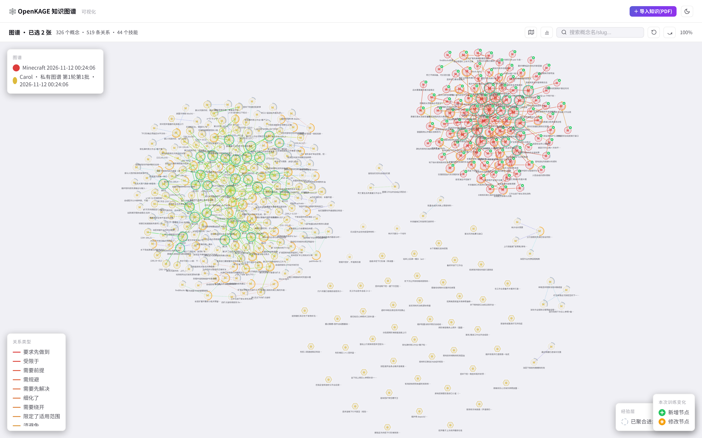
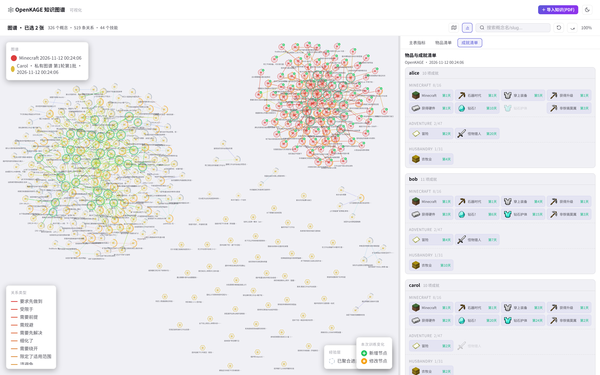
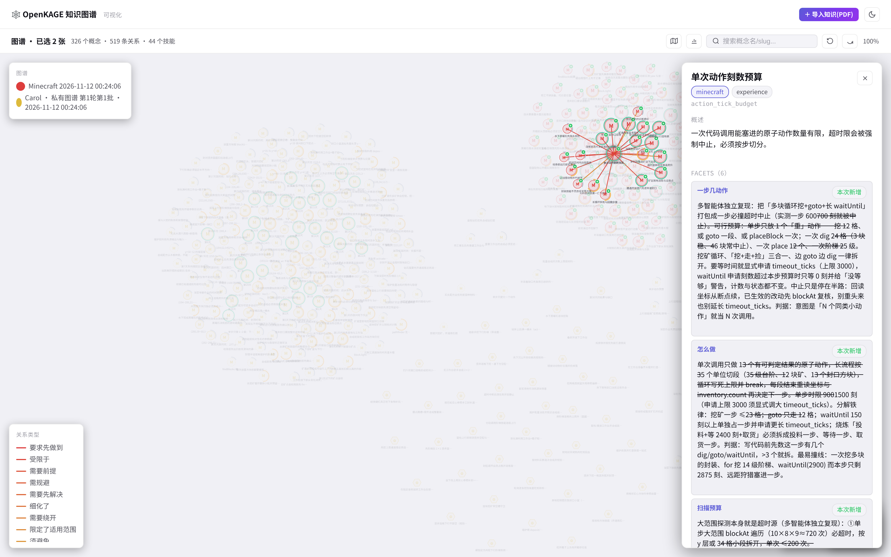

Two-layer knowledge graph
A memory layer keeps situated, per-agent memories; an experience layer holds transferable experience and executable skills with their applicability conditions.
LLM agents · open world · collective evolution
Open Knowledge-sharing Agent-Group Evolution
A framework that drives lifelong learning and collective evolution of agents
OpenKAGE lets a group of LLM agents accumulate, share, and reuse knowledge while exploring an open world. Situated memories stay local; transferable experience and executable skills become a shared resource that the group consolidates, retrieves, and builds on over time.
Key ideas
Accumulation, sharing, and reuse form a continuously evolving loop that brings group experience back into each agent's next decision.
A memory layer keeps situated, per-agent memories; an experience layer holds transferable experience and executable skills with their applicability conditions.
Skills are shared verbatim every night; every K = 2 game days, textual experience is consolidated into a continuously evolving shared graph.
Planning reads subgraphs from both local and shared graphs, so accumulated knowledge returns to decisions.
The framework, two baselines, metric CLI, figure pipeline, and read-only viewer are all included.
Behavior demos
Six representative behaviors show agents gaining experience in Minecraft and reusing shared skills through intent-aware retrieval.






Viewer
The read-only viewer makes a run's knowledge state inspectable: shared and private graphs, exploration trajectories, achievements, and the facets and skills attached to a concept.




Quickstart
Configure .env, install the dependencies, prepare a Minecraft server template and worker directory, then start the rollout loop.
cp .env.example .env
pip install openai python-dotenv pyyaml json-repair
pip install matplotlib Pillow fastapi uvicorn NBT
(cd domains/minecraft/mc_server && npm install)
python experiments/run.py --domain minecraft --arms 3 --max-nights 30 \
--mc-dir /your/mc/server --mc-workers-dir /your/workersReproducibility
The released run records are distributed separately. Extract the archive so that results/ sits beside the code directories, then recompute metrics, regenerate figures, and browse run state.
python experiments/paper_metrics.py --cell ds_openkage --summary
python experiments/plot_paper_progress.py
python viewer/server.pyResources
The paper, code, and run records are provided separately for reading, reproduction, and inspection.
Framework, baselines, prompts, configuration, metric CLI, figure pipeline, and read-only viewer.
Go to GitHub →OpenKAGE: Open-Ended Lifelong Learning in the Open World via Knowledge-Sharing Agent-Group Evolution.
arXiv:2611.24302 →Full results/ archive and checksums for recomputing metrics, regenerating figures, and browsing run state.